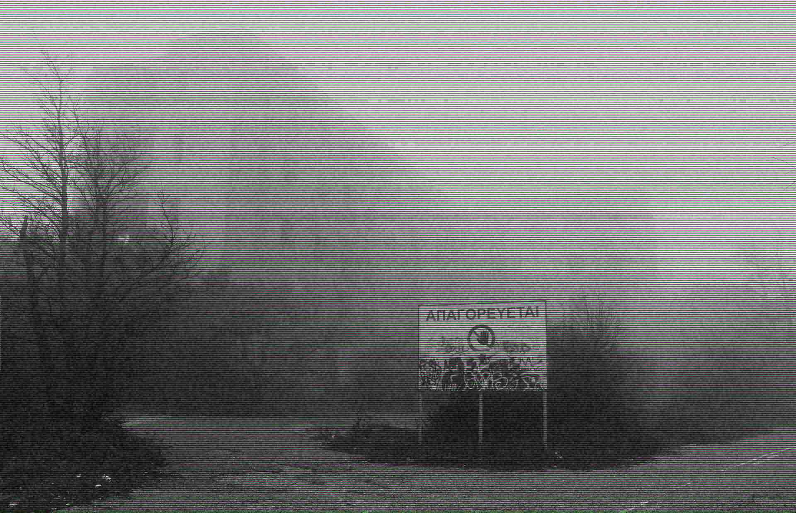

Is the “ghost” tower on Mount Parnitha, which once operated as a sanatorium, haunted?

The Parnitha Sanatorium is considered one of the most chilling abandoned buildings in Attica. It once served as a hospital for tuberculosis patients, isolated from the outside world and hidden deep within a dense forest. Over the years, stories began to emerge that the souls of those who died there never truly left. Visitors speak of eerie screams, footsteps echoing through empty corridors, and dark figures appearing in the windows. Legend has it that when night falls and fog envelops the building, its dark past awakens, transforming the sanatorium into a place where the living can never be certain they are truly alone.